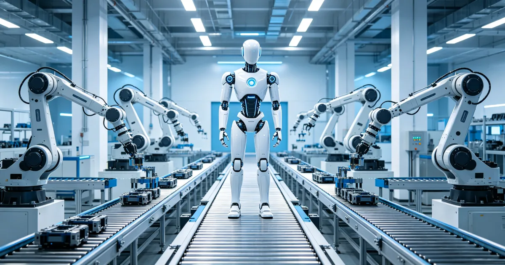

XPeng Robotics — Company Profile
The Xpeng Motors affiliate behind the IRON humanoid.
On September 8, 2026, XPENG commissioned what it calls the world's first automated production line for general-purpose humanoid robots. The first IRON finished final assembly with more than 80% of core processes automated and walked off the line under its own power. Volume production is targeted by end-2026, stores in early 2027, overseas in H2 2027.

When a humanoid robot walks off an assembly line under its own power, the story is no longer about the robot — it's about the factory. On September 8, 2026, XPENG (小鹏汽车) formally commissioned the production line for its IRON humanoid, claiming a global first: an automated line purpose-built for high-level general-purpose humanoids, where more than 80% of core processes run without humans and the first unit rolled out in final assembly and stepped onto the floor autonomously.
XPENG said the line was designed from scratch by its own team, with no precedent to follow — CEO He Xiaopeng called it "the production lines for an entirely new product category." The line integrates automotive-grade quality systems with the precision requirements of humanoid assembly: core-process automation above 80%, high-precision, high-flexibility tooling, and quality controls borrowed directly from XPENG's EV factories. The first IRON completed automated final assembly and walked off the line without human assistance and without teleoperation.
| Metric | Value |
|---|---|
| Height | 178 cm |
| Weight | 70 kg |
| Degrees of freedom | 76 across the body + 21 per hand |
| Compute | 3 in-house Turing AI chips, up to 2,250 TOPS |
| AI execution | Physical-AI model fully on-device, no teleoperation |
| Design | Fully enclosed flexible lattice structure (skin + safety layer) |
| Production line automation | >80% of core processes |
| Supply-chain overlap with EV plants | ~85% |
Sources: XPENG official announcements (Sep 8, 2026); TechNode, Shorty News, Humanoids Daily, Electric Fleet (Sep 7-10, 2026). Some Chinese coverage cites 82 total active DOF including the hands.
Three signals make this a milestone, not a press release:
1. Manufacturing, not assembly, is now the moat. Most humanoid startups still hand-assemble units in labs. A line with >80% automated core processes changes the cost curve: consistency per unit, repeatable quality gates, and a path from dozens to thousands of units a year — the same playbook that made China's EV and smartphone industries unstoppable.
2. The car industry is now the robot industry. With an ~85% overlap between robot and EV supply chains, XPENG inherits mature suppliers for motors, reducers, sensors and electronics. It is the first carmaker to run humanoids through its own production line — ahead of Tesla, whose Optimus line is still being installed in 2026.
3. The roadmap is unusually concrete. Volume production by end-2026; first deployments inside XPENG stores and campuses in early 2027; wider China and overseas launch in H2 2027. That is a faster go-to-market plan than most pure robotics startups publish.
A production line is not yet scale. "First unit off the line" proves the process works once; the hard part is yield, cost per unit and reliability at 1,000+ units. IRON is also entering a crowded field — Unitree and AgiBot already ship thousands of humanoids a year (see our export analysis: AgiBot ~44%, Unitree ~31% of H1 2026 global shipments), and UBTECH is scaling its own lines. XPENG's bet is that automotive-grade quality will win the enterprise and service markets where consistency matters more than price alone.
For the supply chain, the implication is direct: car-grade humanoid production pulls in the same actuators, harmonic drives and sensors profiled across this site — and volume now has a buyer. That is the signal to watch through Q1 2027.
On September 8, 2026, XPENG commissioned what it says is the world's first automated production line for high-level general-purpose humanoid robots. More than 80% of core processes are automated, using automotive-grade quality control. The first IRON completed automated final assembly and walked off the line under its own power, without teleoperation.
IRON is 178 cm tall and weighs 70 kg, with 76 degrees of freedom across the body plus 21 in each hand. It runs three in-house Turing AI chips rated up to 2,250 TOPS and executes its physical-AI model fully on-device, with no teleoperation.
XPENG targets volume production by the end of 2026, with the first robots deployed in XPENG stores and campuses in early 2027, followed by a wider commercial launch in China and overseas markets in the second half of 2027.
XPENG says its line is the world's first automated humanoid production line and leverages an 85% overlap with its EV manufacturing supply chain. Tesla's Optimus line, by contrast, is still being installed in 2026, with volume plans targeted around 2026-2027. XPENG is the first carmaker to run humanoids through its own assembly line.
The Xpeng Motors affiliate behind the IRON humanoid.
Who ships what, and where the export volume comes from.
The component base a car-grade robot line draws on.
Unitree, AgiBot, UBTECH, XPENG and the global field.
Company profiles, product pages and supplier analysis for China's robotics ecosystem.